Effects of Transmissibility Multipliers
Consider once more the incompressible, immiscible two-phase pressure equation
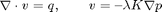
One approach to modelling conduits and barriers to flow is to introduce scalar multipliers on the transmissiblity of a set of grid block connections (cell interfaces). While historically strongly tied to the application of a particular discretisation method (the two-point flux approximation), recent development has demonstrated how to incorporate such multipliers into other consistent and convergent discretisation schemes such as the mimtic method.
Here we illustrate effects of transmissibility mulipliers on the qualitative behaviour of the solution of the above problem. Moreover, we demonstrate how the practitioner may introduce multiplier effects in the mimetic method as implemented in MRST.
We use a realisation from the SAIGUP study and continue the grid example from a previous demonstration.
Contents
- Restore environment to pristine state
- Check for existence of input model data
- Read model data and convert units
- Define geometry and rock properties
- Modify the permeability to avoid singular tensors
- Extract multipliers from the input data
- Inspect multiplier structure
- Define driving forces
- Calculate face transmissibilites
- Create a reservoir fluid
- Initialize the reservoir state object.
- Solve flow problems with and without multiplier effects
- Visualise the results
Restore environment to pristine state
First, clear all variables and close all figures
close all hidden clear
Second, don't emit informational messages unless explicitly requested and remove all effects of gravity
mrstVerbose false gravity off
Check for existence of input model data
The model can be downloaded from the the MRST page
http://www.sintef.no/Projectweb/MRST/
grdecl = fullfile(ROOTDIR, 'examples', 'data', 'SAIGUP', 'SAIGUP.GRDECL'); if ~exist(grdecl, 'file'), error('SAIGUP model data is not available.') end
Read model data and convert units
The model data is provided as an ECLIPSE input file that can be read using the readGRDECL function.
grdecl = readGRDECL(grdecl);
MRST uses the strict SI conventions in all of its internal calculations. The SAIGUP model, however, is provided using the ECLIPSE 'METRIC' conventions (permeabilities in mD and so on). We use the functions getUnitSystem and convertInputUnits to assist in converting the input data to MRST's internal unit conventions.
usys = getUnitSystem('METRIC');
grdecl = convertInputUnits(grdecl, usys);
Define geometry and rock properties
We generate a space-filling geometry using the processGRDECL function and then compute a few geometric primitives (cell volumes, centroids, etc.) by means of the computeGeometry function.
G = processGRDECL (grdecl); G = computeGeometry(G);
The media (rock) properties can be extracted by means of the grdecl2Rock function. This function inspects the keywords present in the input data and constructs a rock data structure that holds the permeability tensor 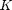 (in the structure field perm), possibly porosity values 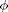 (in the poro field).
The first input argument is the raw input data as constructed by function readGRDECL. The second, optional, input argument is a list of active cells represented as a mapping from the grid's cells to the global grid cells from the original Nx-by-Ny-by-Nz box description.
rock = grdecl2Rock(grdecl, G.cells.indexMap);
Modify the permeability to avoid singular tensors
MRST, or rather the mimetic method implemented in MRST, requires a positive definite permeability tensor in all active grid blocks. The input data of the SAIGUP realisation, however has zero vertical permeability in a number of cells. We work around this issue by (arbitrarily) assigning the minimum positive vertical (cross-layer) permeability to the grid blocks that have zero cross-layer permeability.
We do emphasise that the above restriction does mean that the mimetic method currently implemented in MRST is not capable of handling fully sealing barriers, at least if those barriers are represented as zero grid block permeability.
is_pos = rock.perm(:, 3) > 0; rock.perm(~is_pos, 3) = min(rock.perm(is_pos, 3));
Extract multipliers from the input data
The computeTranMult function, new in MRST release 2011a, extracts multiplier data from input, typically represented by the ECLIPSE keywords MULTX, MULTY or MULTZ, and computes a scalar multiplier value (default 1.0) for each reservoir connection. The result, m, is represented as a scalar for each face for each grid block, with internal faces being represented twice.
In a sense, the computeTranMult function plays a rôle similar to the grdecl2Rock function that extracts and reshapes permeability data from the input model information.
m = computeTranMult(G, grdecl);
Inspect multiplier structure
The multiplier data m is provided once for each face in each grid cell, meaning internal faces are represented twice. However, we need one value per unique face (connection) when we're plotting this data. Fortunately, the computeTranMult function computes a symmetric assignment, so we need only extract the last multiplier value pertaining to any particular face. This is accomplished by indexing into the (smaller) result array mface with the cell-to-face mapping and then doing regular assignment.
mface = zeros([G.faces.num, 1]); mface(G.cells.faces(:,1)) = m;
Define view angle and data aspect-ratio for plotting purposes. These values were obtained by experimentation.
[az, el] = deal(-51, 30); daspctrat = [1.2, 2, 1/2];
We display the grid structure as a background and add some transparency to the graphics so as not to obscure the multiplier data. Moreover, we only display the multipliers that introduce barriers, i.e., the multipliers that are less than unity. To accentuate the structure of this data, we plot the logarithm of the actual multiplier values.
cla plotGrid (G, 'EdgeAlpha', 0.05, 'FaceColor', 'none'); plotFaces(G, find(mface < 1), log10(mface(mface < 1))); view(az, el) axis tight off, colorbar NorthOutside set(gca, 'DataAspectRatio', daspctrat); zoom(1.25)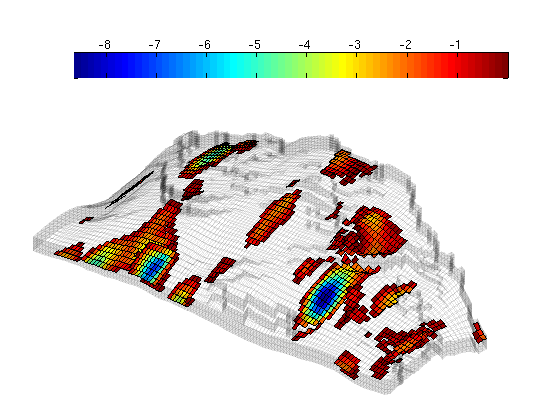
We notice that these multipliers almost exclusively introduce partially sealing flow barriers in the vertical direction. We will additionally introduce lateral flow barriers. The processGRDECL function marks non-neighbouring connections associated with a non-matching corner-point description using a non-zero tag. We first inspect the geometrical structure spanned by these non-neighbouring connections.
cla, colorbar delete plotGrid (G, 'EdgeAlpha', 0.05, 'FaceColor', 'none'); plotFaces(G, find(abs(G.faces.tag) > 0), ... 'FaceColor', 'Red', 'EdgeColor', 'none'); view(-126, 40) axis tight off zoom(1.1 / 1.25)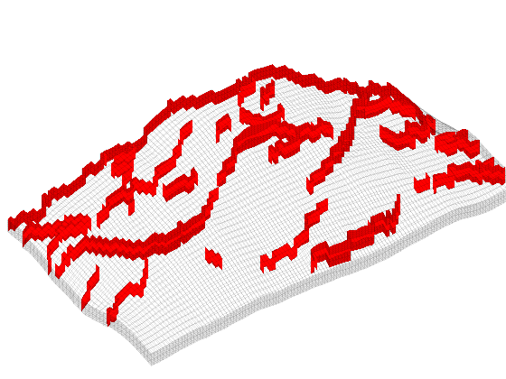
We observe that the fault structures span much of the lateral portion of the model. We will introduce significant flow restriction by assigning a transmissibility multiplier of 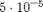 to faces associated with any of the faults.
fault_mult = ones([G.faces.num, 1]); fault_mult(abs(G.faces.tag) > 0) = 5.0e-5; fault_mult = fault_mult(G.cells.faces(:,1));
Define driving forces
We define a water-flooding scenario in which we inject one 50,000th of the total model pore volume per day in a single injection well. We similarly define a production well controlled by a bottom-hole pressure target of 150 bars.
tot_pv = sum(poreVolume(G, rock)); inj_rate = (tot_pv / 50e3) / day; prod_press = 150*barsa;
We will discretise the pressure equation using both the mimetic and the TPFA method. These methods require different empirical constants in the Peaceman well model, here representeded by the 'InnerProduct' option to the verticalWell well constructor function.
First we construct the injection and production wells using the 'ip_quasirt' inner product. This inner product is applicable to the mimetic method we construct below.
We place the injector in an area of the model that is mostly boxed in by the fault structure, so we expect the faults to significantly affect the resulting reservoir flows. Moreover, the producer is in an area that is also mostly shielded from the remainder of the reservoir.
W = []; W = verticalWell(W, G, rock, 30, 85, 1:10 , ... 'Type', 'rate', 'Val', inj_rate, ... 'Radius', 12.5*centi*meter , ... 'Name', 'Inj' , ... 'InnerProduct', 'ip_quasirt', 'Comp_i', [1, 0]); W = verticalWell(W, G, rock, 5, 12, 1:10 , ... 'Type', 'bhp', 'Val', prod_press, ... 'Radius', 12.5*centi*meter , ... 'Name', 'Prod' , ... 'InnerProduct', 'ip_quasirt', 'Comp_i', [0, 1]); [htop, htext, hs] = plotWell(G, W, 'Height', 200, 'Color', 'magenta', ... 'cylpts', 30, 'FontSize', 20);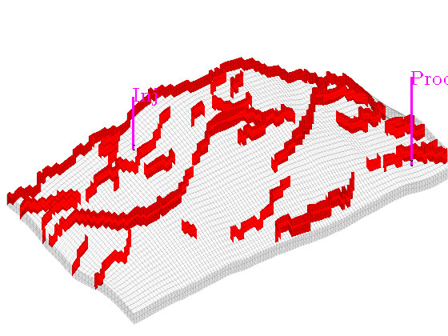
Secondly, we construct the injection and production wells using the 'ip_tpf' inner product. This is Peaceman's traditional well model that contains the empirical factor 0.14 and is applicable to the two-point discretisation defined below.
Wtpf = []; Wtpf = verticalWell(Wtpf, G, rock, 30, 85, 1:10 , ... 'Type', 'rate', 'Val', inj_rate, ... 'Radius', 12.5*centi*meter , ... 'Name', 'Inj' , ... 'InnerProduct', 'ip_tpf', 'Comp_i', [1, 0]); Wtpf = verticalWell(Wtpf, G, rock, 5, 12, 1:10 , ... 'Type', 'bhp', 'Val', prod_press, ... 'Radius', 12.5*centi*meter , ... 'Name', 'Prod' , ... 'InnerProduct', 'ip_tpf', 'Comp_i', [0, 1]);
Calculate face transmissibilites
In this problem we consider only barriers to flow. These manifest as transmissibility multipliers less than unity. Selecting multipliers less than 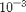 we pick out those multipliers whose effect on the overall solution will be the most distinctive.
An upcoming paper in the SPE Journal shows that multipliers can be incorporated into the mimetic method by computing an associated face transmissibility and subsequently modifying the mimetic inner product using this transmissibility. In particular, if the connection (face) between cells i and j is affected by a multiplier 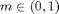, then we may add a diagonal contribution of
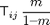
to the corresponding term in the mimetic inner product in cells i and j, respectively.
Here we incorporate the synthetic fault transmissibilities defined above into the actual multiplier data defined in the input, compute the face transmissibilities 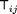 (result ftrans) and the multiplier update outlined above (result facetrans). Function computeMimeticIP will then incorporate these values into the pertinent inner products.
m = m .* fault_mult; i = m < 1e-3; T = computeTrans(G, rock); ftrans = 1 ./ accumarray(G.cells.faces(:,1), 1 ./ T); facetrans = ftrans(G.cells.faces(i,1)) .* (m(i) ./ (1 - m(i)));
We now calculate the mimetic inner product with and without explicit face transmissibility. Note that we employ the 'ip_quasirt' inner product when constructing the discretisations. This is consistent with the well object defined above.
The double type conversion of the cell-to-face mapping in the first column of the 'FaceTrans' option argument is needed to work around a type compatibility issue between the processGRDECL and the computeMimeticIP function. In particular, the former generates a cell-to-face mapping of type int32 to conserve memory while the latter expects that the 'FaceTrans' option argument is a double array, the first column of which contains integral indices. During mixed-type array operations involving integer classes, however, the MATLAB® software chooses a result type that matches the integer class.
S0 = computeMimeticIP(G, rock, 'InnerProduct', 'ip_quasirt'); S1 = computeMimeticIP(G, rock, 'InnerProduct', 'ip_quasirt', ... 'FaceTrans', ... [double(G.cells.faces(i,1)), facetrans]);
Create a reservoir fluid
This model problem uses a standard, incompressible fluid with a factor 10 mobility ratio and quadratic relative permeability curves without residual effects.
fluid = initSimpleFluid('mu' , [ 1, 10]*centi*poise , ... 'rho', [1000, 700]*kilogram/meter^3, ... 'n' , [ 2, 2]);
Initialize the reservoir state object.
The function initState function, new in MRST 2011a, initialises a reservoir- and well solution state object whilst checking its input parameters for basic consistency. In particular, the number of phases must be the same in the well objects and the reservoir state object.
We define the reservoir initial condition as a constant pressure of 100 bars and filled with oil (zero water saturation).
xi = initState(G, W , 100*barsa, [0, 1]); xtpf = initState(G, Wtpf, 100*barsa, [0, 1]);
Solve flow problems with and without multiplier effects
Mimetic discretisation without multipliers.
x0 = solveIncompFlow(xi , G, S0 , fluid, 'Wells', W);
Mimetic discretisation with multipliers.
x1 = solveIncompFlow(xi , G, S1 , fluid, 'Wells', W);
Solve the system using TPFA without multipliers.
xtpf0 = incompTPFA (xtpf, G, T , fluid, 'Wells', Wtpf);
Solve the system using TPFA with multipliers.
xtpf1 = incompTPFA (xtpf, G, T .* m, fluid, 'Wells', Wtpf);
Visualise the results
We finally align the pressure results in a 2-by-2 matrix with the results unaffected by multipliers on the left and the multiplier results on the right. The top row is discretised using the mimetic method while the bottom row shows the TPFA results.
cla subplot(2,2,1) plotCellData(G, convertTo(x0.pressure, barsa), ... 'EdgeColor', 'k', 'EdgeAlpha', 0.1, 'FaceAlpha', 0.825) view(az, el), colorbar, axis tight off set(gca, 'DataAspectRatio', daspctrat) title('Mimetic without multipliers') subplot(2,2,2) plotCellData(G, convertTo(x1.pressure, barsa), ... 'EdgeColor', 'k', 'EdgeAlpha', 0.1, 'FaceAlpha', 0.825) view(az, el), colorbar, axis tight off set(gca, 'DataAspectRatio', daspctrat) title('Mimetic with multipliers') subplot(2,2,3) plotCellData(G, convertTo(xtpf0.pressure, barsa), ... 'EdgeColor', 'k', 'EdgeAlpha', 0.1, 'FaceAlpha', 0.825) view(az, el), colorbar, axis tight off set(gca, 'DataAspectRatio', daspctrat) title('TPFA without multipliers') subplot(2,2,4) plotCellData(G, convertTo(xtpf1.pressure, barsa), ... 'EdgeColor', 'k', 'EdgeAlpha', 0.1, 'FaceAlpha', 0.825) view(az, el), colorbar, axis tight off set(gca, 'DataAspectRatio', daspctrat) title('TPFA with multipliers')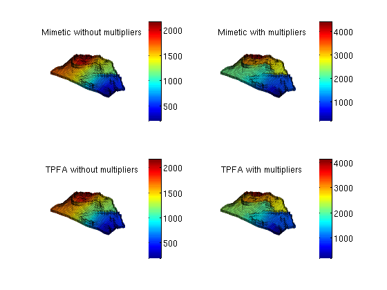
We notice that the results are qualitatively the same between the discretisations (rows), while distinctly different between the models with and without multiplier effects. This demonstrates that it is possible to include barrier modelling in the mimetic method by means of transmissibility multipliers, at least when the multipliers are between zero and one (i.e., ), and that barrier effects can be quite dramatic.